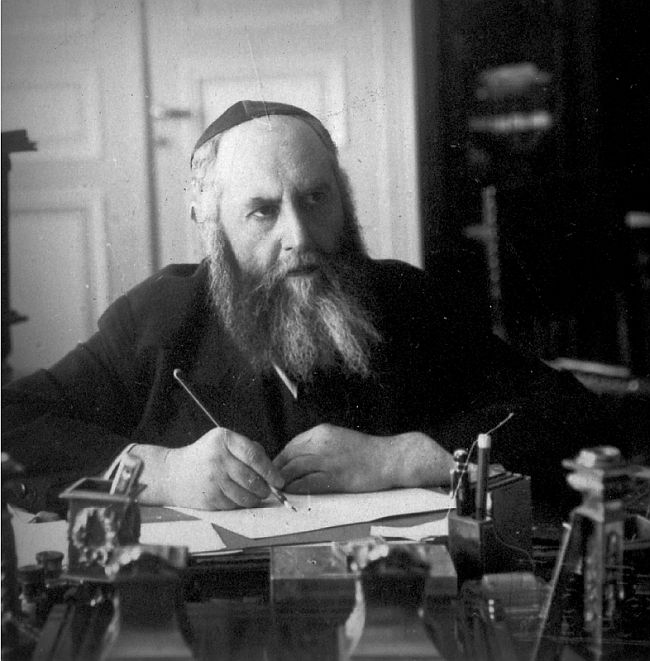

Clandestine Encounters Between The Frierdiker Rebbe and the Joint
In the summer 1929 the Frierdiker Rebbe embarked from Europe to Israel and then to the United States of America for the purpose of fundraising for the Jews in Russia * During the month of Elul 5689 and Tishrei 5690 (1929) the Frierdiker Rebbe and the Rashag met twice with representatives of the American Joint Distribution Committee (JDC) * In a series of documents and letters never published before, we present a short report on the first meeting from the point of view of the Frierdiker Rebbe, and a detailed report on the second meeting, from the point of view of the JDC officers * Before the second meeting, the JDC prepared a “Secret Memorandum” which describes at length the work of the Frierdiker Rebbe in Russia, even after he left Russia, and the ingenuity of the Frierdiker Rebbe in financial matters, which resulted that every dollar received from the JDC doubled or tripled in value * These meetings were done under a veil of secrecy, and the “Secret Memorandum” emphasized: “It is possible for us to carry on this work only on condition that no publicity and no noise and no brass band is made of it” * Exclusive
Pirsum Rishon: An Excerpt from a letter penned by the Frierdiker Rebbe to his wife in which he describes his preparation for the second meeting

Details of this trip have been presented in the book “Toldos Chabad B’Artzos HaBris,” the preface to Igros Kodesh Volume 2, Sefer HaSichos 5688-5691, and throughout the years in this magazine.
However, in all the accounts of this year-long trip there is no mention of a clandestine meeting that took place during Aseres Yemei Teshuva 5690 (1929) between the Frierdiker Rebbe and the Rashag representing Chabad, and two Frum representatives of the American Joint Distribution Committee (JDC): Mr. Peter (Peretz) Wiernik, the head of the Central Relief Committee, and Dr. Cyrus Adler, a member of the directorate of the JDC.
The following article will include a description of this meeting, along with the background information pertaining to this meeting, which is found in the JDC Archives (which were digitized and uploaded online, thanks to a grant from Dr. Georgette Bennett and Dr. Leonard Polonsky CBE).
The rest of the documents regarding the Frierdiker Rebbe’s extensive involvement with the JDC on behalf of Russian Jewry, which spanned over a decade, will be presented in a separate series in the near future.
The Rashag to Dr. Adler: “It is our desire that conference shall bear a strictly private character”
On September 21, 1929 (22 Elul 5688), the Rashag sent a letter to Dr. Cyrus Adler, requesting that the first meeting between the Frierdiker Rebbe and the JDC officers shall take place in Dr. Adler’s home, and should be of a “strictly private character”:
My dear Dr. Adler:
Mr. Hyman of the Joint Distribution Committee informed me of his conversation with you regarding a conference with Rabbi J.I. Schneersohn, scheduled for coming Thursday at 2;30 o’clock in the afternoon.
While we agreed upon the hour, we are undecided about a place. It is our desire that conference shall bear a strictly private character. If it be possible therefore for you to arrange to meet us at you residence in New York, it would be very pleasing. However, if unable, we would kindly request you to please suggest an address for same date.
Accept kindest regards and best wishes for a Happy and Prosperous New Year.
Awaiting you reply, I am,
Sincerely yours,
Samarius Gourary
The Frierdiker Rebbe
on Dr. Adler:
“You can find in him
the Jewish pulse”
An excerpt from a letter penned by the Frierdiker Rebbe to his wife (Tishrei 4, 5690), published here for the first time, describing the first meeting with the JDC officers, and the deep effect he had on Dr. Cyrus Adler and Mr. Peretz Wernick, and his hopes for a successful second meeting (Translated from Yiddish):
Tuesday, Tishrei 4, 5690
People say that Peretz Wernick, the editor of the Morgen Journal newspaper, became my Chossid. The devotion and respect that he gives me – is visible to everyone. And thank G-d, the same thing is with all those visited me until now.
After an hour’s conversation, everyone left satisfied. Yesterday, he [Peretz Wernick] told my son-in-law Rabbi Shmaryahu [Gourary], that Professor Cyrus Adler told him I made a very good impression on him.
Last week, on the Thursday before Rosh Hashana, I met him [Peretz Wernick], together with [Professor] Adler, for a half an hour, in a separate office in the JDC. I spoke only in Yiddish, but with hearty points. We agreed to meet, G-d willing, tomorrow. The time is set for 1:30 to 3:00. He is very serious, with a scholarly face, and you can find in him the Jewish pulse, the Jewish vein.
May G-d have mercy on me, and give me unusual success (above nature) in everything – both the community issues, and for us personally. There are great hindrances. Mr. Rosen said we will receive 50 thousand dollars for the future, but I want 150. May G-d have mercy.
The Frierdiker Rebbe on the JDC Proposal:
“Offering half a
penny to a large starving family”
The description of the second meeting, from the point of view of Dr. Cyrus Adler (JDC):
Memorandum of interview had with Rabbi [Yosef Yitzchak] Schneerson and his secretary, Rabbi [Shmaryahu] Gourary, by Dr. [Cyrus] Adler and Mr. [Peter] Wiernik on Wednesday afternoon, October 9, 1929 [Tishrei 5, 5690]”
These gentlemen stated that there were five subjects which they want to present to us concerning the religious life in Russia: Shechita, Sabbath, Mikvas, Education and Rabbis. They spent most of their time, however, talking on the subject of education.
I asked them what was the point about Shechita, – whether they lacked Shochtim or whether it was prohibited. They said that they neither lacked Shochtim nor was it prohibited; that they were not permitted to get the animals to kill. I told them that I had not heard of this, – that many of the people had lived without beef for a good many years. That if they had cows [=milk] and vegetables, these people could live.
They stated that the Mikvas were perfectly legal. In fact, most of them had been destroyed during the war and they had no funds to rebuild them.
The rabbis, they said, were in a deplorable condition. The communities lacked income to pay them. They could not collect enough money and moreover the meat tax, which had been the principal support of the Kehillas was lost through the lack of the ability of the Shochtim to kill the cattle. They also said that the rabbis were put in a class in which they were required to pay the highest rent for their rooms and in some cases forced to pay as much as five times the amount the laboring man paid for the same rooms. That altogether their condition was most deplorable and a large sum of money was required for their support. They submitted the attached memorandum.
They then spoke of the next three months. They said that Dr. Rosen had told them that he could let them have Roubles 10,000 in the next few months. Rabbi Schneerson said that this is like offering half a penny to a large starving family.
They presented further a budget for religious work for the next year (1930), which totalled $1,000,000. They asked that the Joint Distribution Committee, through Its Russian appropriations, supply this amount up to 30%, or $300,000.
They then pointed out some perfectly legal ways in which Joint Distribution Committee money could be used for the support of religious needs. Kosher kitchens, they said, were perfectly legal and cheap kosher kitchens could be set up throughout the country.
Rabbi Gourary said that he would furnish me with the exact wording in the Russian text of just what was needed and what was not, and I asked him, with the help of Mr. Wiernik, to send me a translation. In addition, I should like to have a photostatic copy of the code text.
Based upon a memorandum handed me by Mr. Hyman [see below], which was prepared by R, I translated to them what he said was the situation there, which they admitted in the main to be correct. They stated, however, that it was highly necessary from their point of view that funds for the rabbis or for cultural work should continue to go through Dr. Rosen, for whom they had nothing but the highest praise.
They then asked me if I would give them my moral support in their endeavor to secure funds. They understand perfectly that there is to be no publicity and no meetings. They were willing to interview individuals and asked for my support in visiting these Individuals.
They pointed out that through the material and also the moral support of the $10,000 which Dr. Kahn allotted for Matzohs last spring, Dr. Hildesheimer and the other Jews had been able to get $90,000 abroad. They said particularly that momentary help is most urgent and that the rabbis must be helped at once.
Towards the end of the report, reference is made to the “Matzoh campaign” of 1929, which was a campaign directed by the Frierdiker Rebbe to secure Matzos for Russian Jewry, starting in 1929 and continuing throughout the 1930’s. Files pertaining to this campaign will be presented in the future.
“The authorities who are merely winking at the thing for other considerations…”
This report mentions a memorandum prepared by Mr. Hyman. This “Confidential memorandum” was prepared two days before the meeting, on October 7, 1929 (Tishrei 3, 5690) by Mr. Joseph Hyman, the secretary of the JDC, discussing the work of the “our Friend” (the Frierdiker Rebbe), “Mr. R” (probably Dr. Rosen, head of the JDC in Russia) and the “Rabbinical Committee” (the organization founded by the Frierdiker Rebbe in Russia, which continued managing the Chabad activities in Russia):
“Confidential Memorandum”
From: J.C. Hyman
To: Dr. Cyrus Adler
In connection with your interview on Wednesday, I think you ought to bear in mind the following facts concerning the situation in Russia:
1. Under the Russian regulations, there is no legal impediment to worship on the part of Jews or any other creed, – – whether this be in large synagogue atmosphere or in small minyanim.
2. The confiscation or seizure by the authorities of synagogue or ecclesiastical buildings is generally done on the following theories:
a. That the buildings which constitute technically the property of the local municipalities are falling into disrepair, or
b. That the buildings are not fully or adequately used for the purposes for which they are available and consequently should be applied to the other municipal or communal functions, or
c. At the request of local groups of Jewish workingmen or members of labor unions, etc. who claim that they have a much better right to the use of the buildings which they will utilise fully for club, literary and other purposes, than those who want the buildings for religious observance which, in the main, are attended by a very small group of congregants.
Dr. Rosen states to me that during the last year, let us say from October 1928 to the present time, he is not aware of any increased percentage of confiscation of Jewish buildings out of proportion to the taking over of other religious edifices. In fact, more churches have been confiscated and razed to the ground than has been true in the case of synagogues…
So far as religious instruction is concerned, the regulation is that a class may be conducted to consist of no more than three persons under the age of 18. There is no objection to a teacher conducting as many classes as he desires, providing they do not consist of more than three of these minors under the regulation. Religious instruction is permissible for classes or groups above the age of 18, and there are a number of Yeshivas of these older students now in Russia.
Despite these regulations, there are a number of clandestine Chedorim and Talmud Torahs. These exist in every one of the large cities of Russia and in a majority of the smaller towns. The support of these institutions is derived from local collections and from abroad.
Up to the time that our friend [The Frierdiker Rebbe] left Russia, he was virtually the moving spirit supervising the collection and distribution of these funds and maintained contact with all of the rabbis and leaders throughout Russia as chairman of the clandestine Rabbinical Committee.
With the expulsion of our friend, he kept in touch with the remainder of the Rabbinical Committee from Riga and he is still in contact with the members of this committee and directing their work, but he is not supplying them with funds. All the funds that the Rabbinical Committee has received from abroad has been given them by R in Russia.
After our friend left Russia, he found the possibility of making arrangements in Riga with some people living in Russia who had Russian money or remnants of their old fortune which they were anxious to get abroad. There is no chance of exchanging Russian money for dollars or for other foreign currency in Russia and so these people want to send it abroad. These people are ready to give their Roubles away in Russia at a reduced rate provided someone is in a position to pay out a corresponding amount in dollars to them or to their order in any country abroad. Thus our friend was able to get for a dollar more than the regular rate in Roubles; In fact as much as two and three times as many Roubles for a dollar. It is quite possible that at present he gets a better rate as there are a few people who still have considerable amounts of Russian money which they are anxious to get rid of.
These transactions are very good. The chances that he or some others will get into trouble in Russia on account of this are rather small, but at the same time it may happen. Our point of view has been that if some of the rabbis would be arrested or prosecuted by the Government for teaching religion, we would be in a position to interfere in an unofficial way and be helpful to them. If any one of them gets into trouble on account of illegal money exchange, it will be absolutely impossible for us to do anything for them and it would give the government a strong argument for prosecuting them severely.
As a matter of fact, anybody in Russia who is caught making illegal transactions is liable to be exiled to Siberia or other remote sections of the country for a period of from three to five years, or imprisonment and hard labor for the same period.
While it is inconvenient for the Agro-Joint to continue to carry on relations with this Rabbinical Committee and supply them with funds from time to time, we can still do it. It is inconvenient for us but it is very convenient for the Rabbinical Committee because if it should ever become necessary, they can say they received the funds from the Agro-Joint. We would like to discontinue this. At the same time, we cannot deny that if this work is to be carried on, it is more convenient for the rabbis to receive funds through the Agro-Joint than from any other source.
It is against the law to have money brought into Russia from abroad except through the bank. If it is found out that they have received money from the Agro-Joint, there will be no technical crime committed. On the other hand, if it is ever found out that they have received money from other sources outside of the Agro-Joint and the Government bank, not only they but the people for whom they have received the money in Russia are bound to get into difficulty.
It is possible for us to carry on this work only on condition that no publicity and no noise and no brass band is made of it, as the whole thing is undoubtedly known to the authorities today who are merely winking at the thing for other considerations.
We made arrangements to use some of our profits for this religious work and this amounts to more than the legal rate of exchange.
Beis Moshiach (staff). "Clandestine Encounters Between The Frierdiker Rebbe and the Joint." Beis Moshiach, no. 1004 (January 12, 2016).